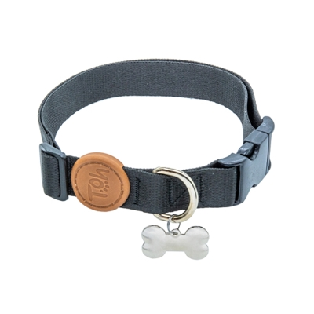

Coleira Toh com Tag ID Black para Cães
Combine estilo, segurança e conforto nos passeios com a Coleira Toh. Feita com material ultra macio e design exclusivo, ela também vem com uma tag de identificação para manter seu amigo sempre seguro.
Principais Benefícios:
- Segurança em Dobro: Acompanha uma
tag de identificação para registrar os dados do seu pet.
- Material Premium: Fita de
poliéster 100% ultra-soft, que é confortável e muito
resistente.
- Durabilidade Garantida: Fechos de
metal zamac e argola de aço inoxidável que não
enferrujam.
- Design Exclusivo: Estampa preta,
moderna e estilosa para o dia a dia.
Disponível nos tamanhos PP, P, M e G.
Tamanhos e Preços:
| Tamanho | Preço |
|---|---|
| PP | R$ 23,99 |
| P | R$ 39,99 |
| M | R$ 44,99 |
| G | R$ 49,99 |